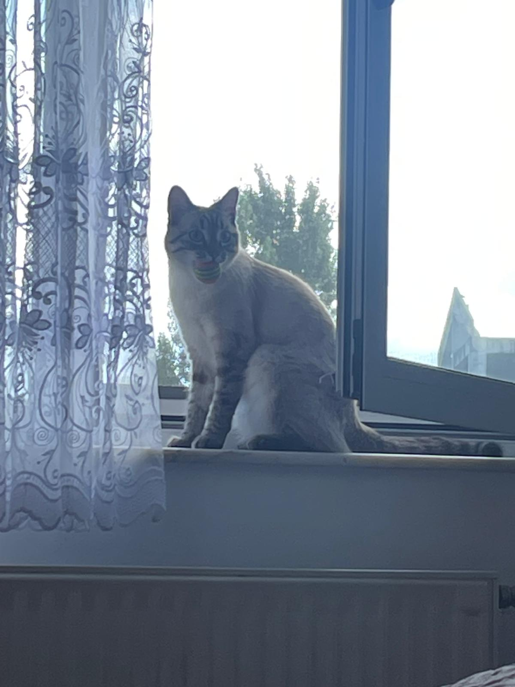
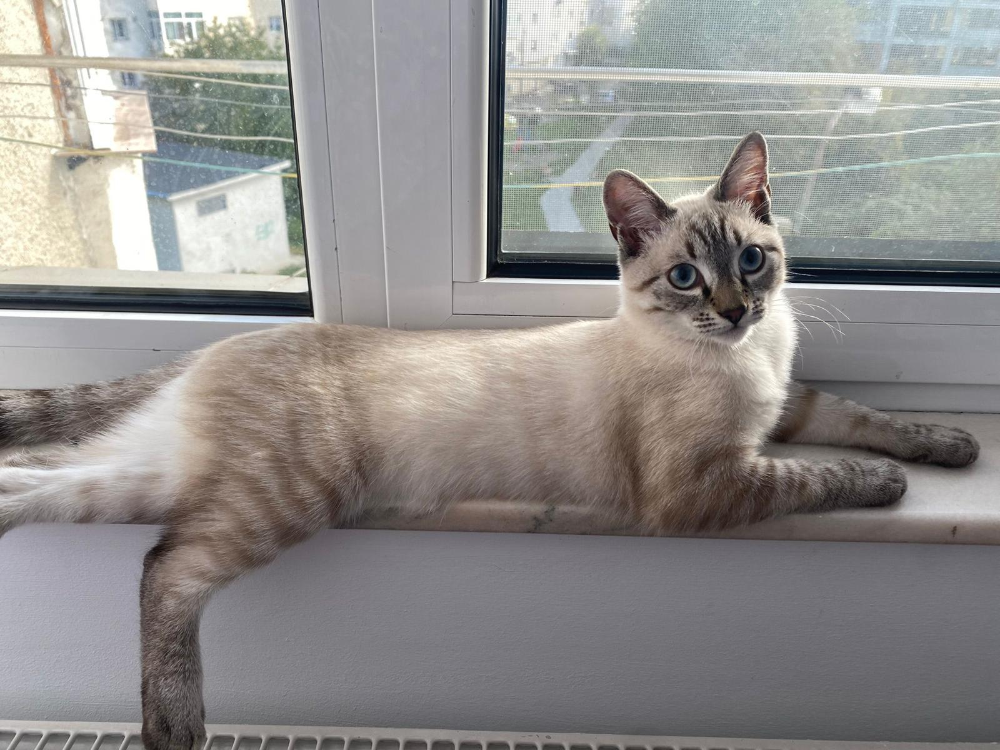
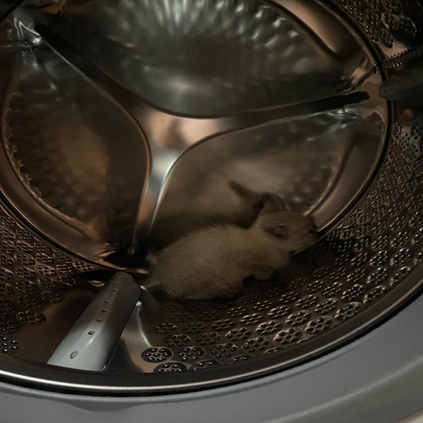
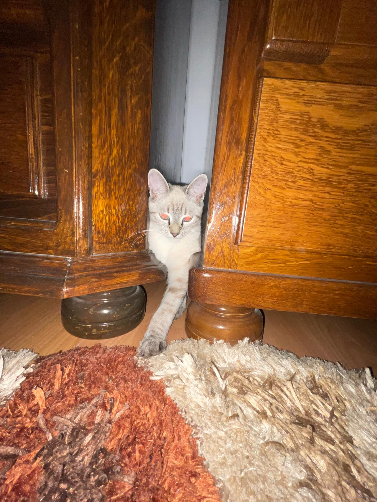
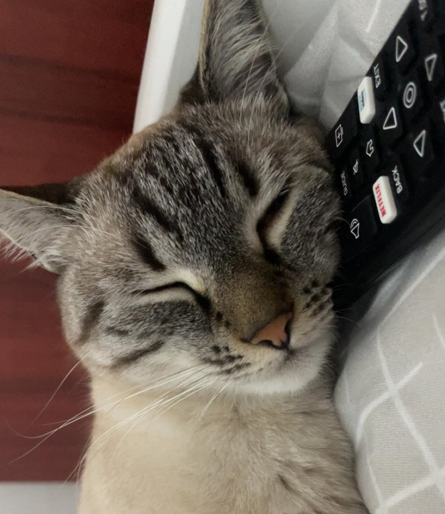
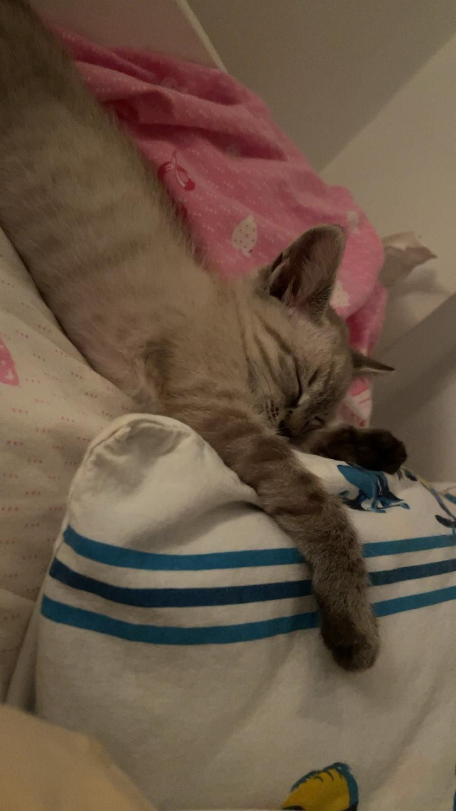
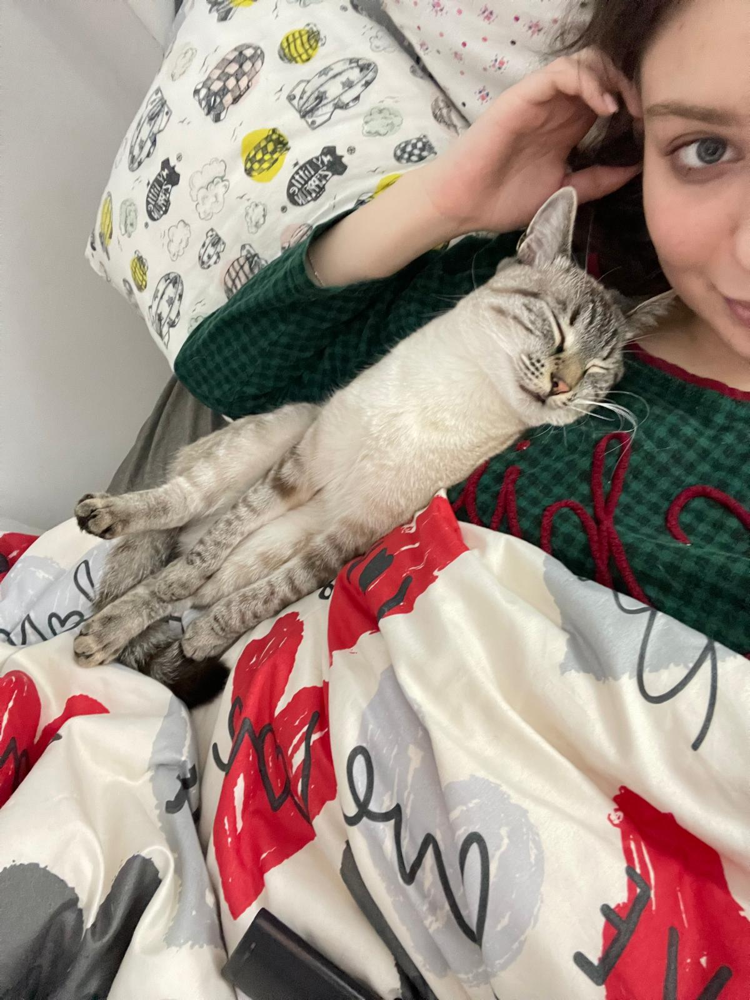
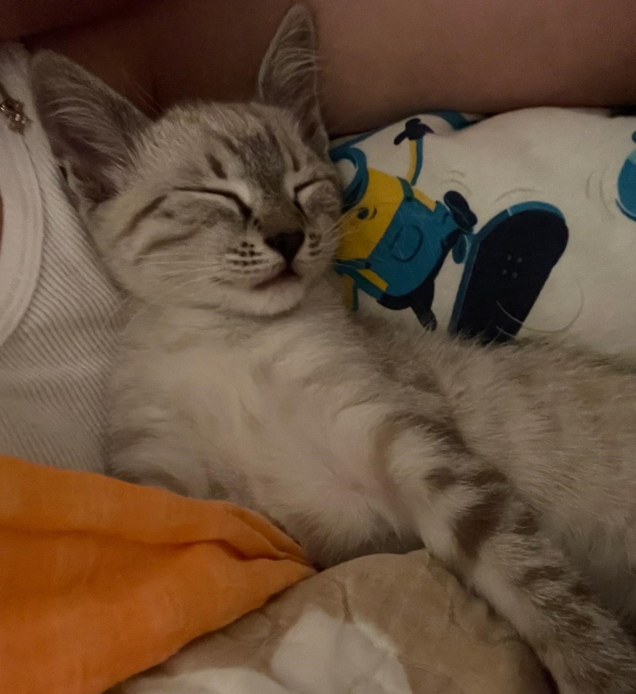
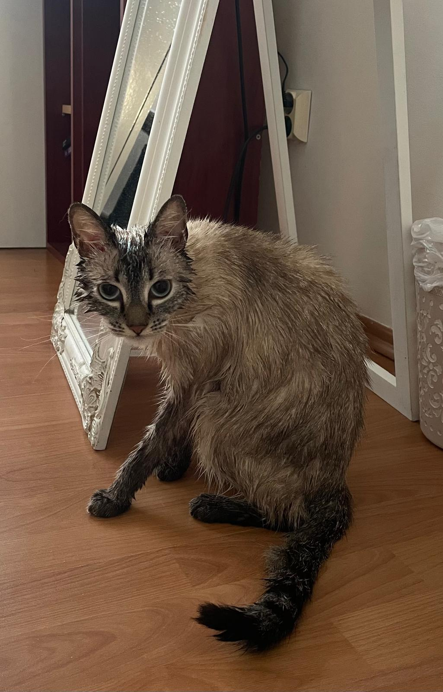
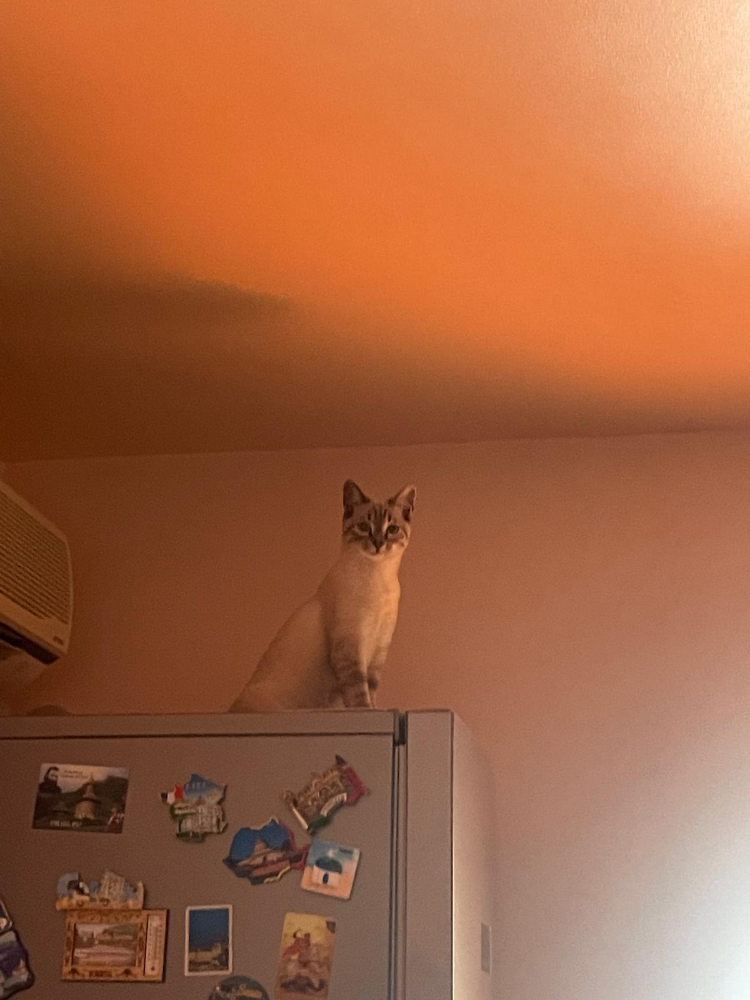

🐾 Jurnalul Cosmic: Poveștile Lolei, de la Pisoi la Explorator
Bine ați venit în jurnalul nostru interactiv! Aici veți găsi articole despre viața agitată și plină de
mister a Lolei, de la zilele ei ca un ghem mic de puf până la statutul ei actual de Regină a Pervazului.
🚀 Misiuni de Vânătoare & Explorări Sălbăticite

🔎 Pervazul Interdimensional: Misiunea de Vânătoare.
Articol 1: Pervazul Interdimensional
Pervazul ferestrei nu este doar un loc de stat la soare, ci o bază de observație strategică!
Vânătoarea de musculițe, urmărirea păsărilor și, bineînțeles, confruntarea cu mingea noastră de pluș
– acesta este antrenamentul zilnic al Lolei. Niciun eveniment din lumea exterioară nu scapă ochiului
ei albastru și vigilent.

🧘 Somnul de Pază: Pauză tactică pe pervaz.
Articol 2: Somnul de Pază
Dacă o vezi întinsă așa, nu te lăsa păcălit! Este doar o pauză tactică. De fapt, Lola scanează
mediul înconjurător pentru noi amenințări (sau pentru a vedea dacă frigiderul s-a deschis magic).
Picioarele atârnate sunt un semn de încredere deplină în echipajul de la sol.

🧺 Marea Mașină de Spălat: Un Portal Misterios.
Articol 3: Gașca de Detectivi și Mașina Timpului
Când era mică, mașina de spălat era peștera Lolei, sanctuarul ei de explorare. Orice spațiu închis,
fie el o cutie, o oală sau un tambur de metal, este un tărâm nou de cucerit. Explorarea spațiilor
înguste a fost mereu pasiunea ei.

🔦 Prinderea în Fapt: Teroarea de sub Dulap.
Articol 4: Teroarea de sub Dulap
Această poză surprinde perfect faza de pisică-fantomă. Jucăriile pierdute nu sunt pierdute, ci
ascunse strategic sub mobilă. Lola se asigură că sunt în siguranță, inspectând fiecare colț
întunecat cu o privire aprigă.
☁️ Nopți de Odihnă și Somnul Estetic

😴 Puterea Telecomenzii: Somnul lângă Bagheta Magică Neagră.
Articol 5: Puterea Telecomenzii
Se pare că somnul Lolei este mai profund lângă un obiect de control. Telecomanda trebuie să fie
lângă ea pentru a-i asigura liniștea în timpul siestelor. Nici măcar vibrațiile unui mesaj primit nu
o pot deranja când ajunge în starea de somn Alfa-Z.

🧘 Poziția de Yoga Felină: Laba la Locul Ei.
Articol 6: Poziția de Yoga Felină
O postură elegantă, cu laba întinsă pe pernă, arătând lumii că relaxarea este o artă. Când Lola
atinge această stare de repaus, nici măcar un zgomot puternic nu o poate deranja. Este momentul ei
de refacere totală a energiei.

😻 Căldura Fuzionării: Cel mai bun loc din casă.
Articol 7: Căldura Fuzionării
Cel mai mare lux felin? O suprafață moale, caldă și în mișcare (Adică, Stăpâna). Această poziție nu
este doar confortabilă, ci asigură că Lola este prima care știe când se trezește cineva, pentru a
putea cere micul dejun. Un exemplu perfect de exploatare termică și emoțională!

💤 Visând la pești, sub păturica moale.
Articol 8: Caldura (sau de ce avem nevoie de patru pături)
Pisica mea are nevoie de cel puțin două pături pentru a se simți în siguranță. Observați expresia
feței: este mulțumirea absolută. Acest moment este o scurtă dedicată somnului din cartea de povești
a Lolei.
😂 Momente Legendare & Jurnale de Mâncare

💧 O Zi Proastă: Aventura Sub Duș.
Articol 9: Aventura Sub Duș
Nu toate aventurile se termină cu succes. Deși pare un personaj mitologic, Lola nu a primit încă
superputeri după ce a trecut prin apă. Aici este surprinsă imediat după o "împrospătare"
neașteptată. Expresia feței spune totul: "Voi ține minte asta!".

👑 Regina Frigiderului: Poziție de control total asupra hranei.
Articol 10: Deasupra Tuturor
De ce să stea pe podea când poate să stea pe frigider? Această poziție, deși neobișnuită, îi oferă
două avantaje: 1. Sentimentul de dominare absolută. 2. Este prima care aude și vede când se umblă la
proviziile secrete (mâncarea ei).
😈 Răzvrătire & Mici Atacuri Misterioase
Atacul Mânecii: Pisica nu vrea să se joace sau vrea să muște?
Articol 9: Atacul Mânecii (Misterul Predării)
Când mâneca devine dușmanul suprem, Lola intră în modul de luptă! Acest video surprinde momentul de
maximă concentrare în care pisica nu știe dacă mușcă din joacă sau dacă încearcă
să-și marcheze teritoriul. Un moment pur de răzvrătire împotriva textilelor.
Mini-Luptătorul: Agresivitate din pură distracție.
Articol 10: Mini-Luptătorul și Brațul-Jucărie
În primele săptămâni, brațul stăpânului era considerat cel mai mare (și singurul) adversar. Acest
mic razvratit nu știe încă să-și dozeze forța, dar intensitatea jocului este de necontestat. Din
fericire, este vorba doar de joacă, dar este un exercițiu zilnic de dominare.